Матеріали Дентсплай Сірона · журнал «ДентАрт» 2016 №3
Матеріали та інструменти для пломбування кореневих каналів
ROOT CANAL FILLING MATERIALS AND TECHNIQUES
Терміном «обтурація» більшість лікарів описує другий етап лікування кореневих каналів. Обтурацією, за визначенням, є «закриття простору», що не передбачає заповнення цього простору [1, 2]. Фактично ж термін «обтурація» коректніше застосовувати щодо ретроградного пломбування при виконанні апікальної хірургії, оскільки просвіт кореневого каналу закритий, в той час як сам кореневий канал залишається неторканим. Більш коректним є визначення «пломбування кореневого каналу».
Пломбування кореневого каналу — друга фаза ендодонтичного лікування після мікробіологічного контролю, яка запобігає проникненню мікроорганізмів у кореневий канал (у вітальних зубах) або після їх видалення в процесі інструментальної обробки та іригації (в зубах з некротизованою та інфікованою пульпою). Мета пломбування — збереження низького мікробного навантаження, що залишилося в межах кореневого каналу, і поліпшення клінічної і рентгенологічної картини. Також слід наголосити на необхідності якнайшвидшої фінальної реставрації після пломбування кореневого каналу. Сьогодні загальновідомий факт неможливості повноцінної стерилізації кореневого каналу і фізичного видалення біоплівки — зважаючи на складну анатомію кореневої системи.
Таким чином, цілями пломбування кореневих каналів є [3]:
- запобігання корональному підтіканню після пломбування кореневого каналу і відновлення коронкової частини зуба;
- запечатування мікроорганізмів, що вижили у просвіті кореневого каналу, із запобіганням їх розмноженню та сполученню з перирадикулярними тканинами;
- запобігання затіканню періапікальних рідин, які є живильним середовищем для мікрофлори кореневого каналу.
Пломбування кореневого каналу вимагає розробки адекватних матеріалів і технік, поліпшення їх властивостей.
Властивості ідеального пломбувального матеріалу по Grossman (1936):
- легке введення в кореневий канал;
- нечутливість до вологи;
- запечатування каналу як апікально, так і латерально;
- відсутність усадки після введення;
- бактеріостатичний ефект або відсутність індукції росту мікроорганізмів;
- рентгенконтрастність;
- відсутність забарвлювання структур зуба;
- відсутність подразнювальної дії на періапікальні тканини;
- можливість легкого видалення з кореневого каналу;
- стерильність або можливість легкої стерилізації перед внесенням;
- біосумісність.
Через 80 років ми все ще використовуємо основний матеріал для закриття якомога більшого простору і силер для заповнення порожнин між цим матеріалом і дентином. Силер також може відігравати роль мастила.
Силери відіграють важливу роль у запечатуванні кореневого каналу. Не слід застосовувати матеріали, що викликають некроз тканин, а також силери, що містять додаткові медикаментозні речовини, які можуть погіршувати процес загоєння. Формальдегідвмісні силери мають виражену цитотоксичність. Матеріали, що містять кортикостероїди, мають цитотоксичний ефект, вони уповільнюють загоєння через наявність фактора імуносупресії.
Гутаперча і срібні штифти були найбільш популярними кор-матеріалами протягом останніх ста років. У 2011 році Американська асоціація ендодонтистів (ААЕ) рекомендувала припинити використання срібних штифтів [4, 5] у зв'язку з:
- корозією в присутності крові та тканинної рідини;
- забарвлюванням зуба і навколишніх тканин;
- неможливістю фіксації штифтової конструкції після пломбування кореневого каналу;
- складністю виконання апікальної хірургії.
Таким чином, гутаперча залишається найбільш поширеним основним матеріалом. Сучасні гутаперчеві штифти складаються з органічних (гутаперчевий полімер і віск, приблизно 18-22%) і неорганічних компонентів (окис цинку, сульфат барію, 37-75%). Також в них присутній невеликий відсоток барвників та антиоксидантів [6].
Хімічно чиста гутаперча існує у двох різних кристалічних формах (α і β), які можуть трансформуватися одна в одну (рис. 1). Цей перехід фаз гутаперчі оборотний і є циклічним феноменом [7]. Природна гутаперча представлена α-фазою. β-фаза виникає при її охолодженні. При нагріванні гутаперчі в межах 42-49°С β-фаза трансформується в α-фазу. При нагріванні до 53-59°С α-фаза трансформується в аморфну гутаперчу (γ-фаза) [8].
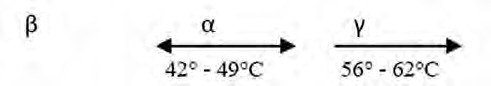
Рис. 1. Фази і трансформація гутаперчі.
α-фаза гутаперчі крихка при кімнатній температурі, при нагріванні стає клейкою і високотекучою (низька в'язкість). β-фаза гутаперчі стабільна і гнучка при кімнатній температурі, при нагріванні стає менш клейкою і текучою (висока в'язкість). Термопластифікована гутаперча, використовувана для техніки гарячої компакції, — α-фаза, в той час як для холодних методик використовується β-фаза [9]. При нагріванні від β до α або до γ-фази відбувається незначне розширення гутаперчі (1-3%). При охолодженні виникає усадка більша, ніж ступінь розширення при нагріванні, вона відрізняється приблизно на 2% [10].
Традиційна β-фаза гутаперчі використовується через поліпшену стабільність, щільність та низьку клейкість, проте α-фаза гутаперчі з низькою в'язкістю затікає з меншим тиском або стресом і створює більш гомогенну структуру матеріалу. Зразки матеріалів з гутаперчею α-фази — Thermafil, Gutta Core і т.д. [11].
Концепція «моноблока», яка означає створення механічно гомогенного з'єднання з дентином кореневого каналу, є головною метою пломбування кореневих каналів. Спроби створити адгезивне з'єднання всередині кореневого каналу між пломбувальним матеріалом і структурами дентину мали наслідком розробку адгезивних ендодонтичних систем, таких як Resilon і Epiphany. Однак деградація адгезивного з'єднання призвела до неспроможності цих систем (фото 1).
Більшість силерів відповідає необхідним вимогам, за винятком біосумісності. При цьому є ризик провокування запальної реакції у сполучній тканині, погіршення загоєння перирадикулярної деструкції і потенційного розвитку резорбції кореня [54].
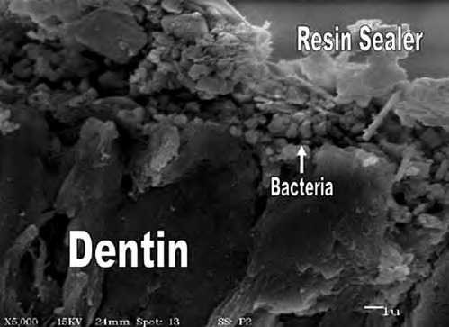
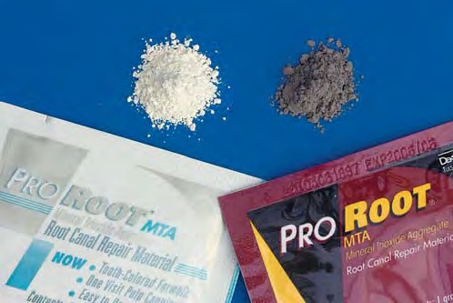
Мінерал Триоксид Агрегат (МТА), і зокрема ProRoot MTA (Maillefer) — матеріал для відновлення кореневого дентину, з успіхом застосовуваний ендодонтистами, — один з найбільш досліджених продуктів в ендодонтії (фото 2) з високою біосумісністю і загоювальними властивостями [56].
Нове покоління біокерамічних силерів має низку переваг:
- високий ступінь гідрофільності (на відміну від інших силерів);
- отвердіння силера залежить від фізіологічної вологості в каналі (тривалість отвердіння може змінюватися);
- неотверділа біокераміка має високий показник рН (вище 12);
- високий антибактеріальний потенціал;
- не має усадки, але в той же час трохи розширюється;
- не розчиняється в тканинних рідинах;
- абсолютна біосумісність.
Дослідження підтверджують, що ці матеріали потенційно зміцнюють ендодонтично ліковані зуби до рівня інтактних зубів [12].
Традиційне пломбування кореневого каналу складається з використання стандартного гутаперчевого штифта (основного матеріалу) і додаткових штифтів разом із силером, що заповнює простір між гутаперчевими штифтами і стінкою кореневого каналу. Основний гутаперчевий штифт (майстер-штифт) використовується тільки як філер і не запечатує кореневого каналу. Силери визначають резистентність до підтікання в кореневому каналі. Традиційні силери мають серйозні недоліки, зокрема усадку при отвердінні та вимивання в присутності тканинних рідин [13-15]. Крім того, силери не мають адгезії до гутаперчі, вони утворюють порожнини з можливим подальшим мікробним заповненням при їх усадці. Тому об'єм силера повинен бути мінімальним.
Оскільки гутаперчеві штифти мають конічну форму і округлий переріз, дуже складно створити тонкий шар силера, бо профіль кореневих каналів переважно овальний з великою кількістю відгалужень. У 60-х роках минулого століття Герберт Шилдер [16, 17] запропонував розігрівати гутаперчу для можливості її компакції і заповнення максимального простору кореневого каналу та мінімізації силера. Гідравлічні сили, що виникають при цій методиці, дозволили візуалізувати на рентгенограмі множинні додаткові канали, заповнені силером і гутаперчею. На жаль, недоліки моноштифтової техніки і латеральної конденсації збереглися і в цій методиці. Після охолодження гутаперчі виникає ще більша усадка, ніж усадка силера [18, 19].
При підготовці кореневих каналів до пломбування слід дотримуватися таких принципів:
- створення апікального упору, який запобігає надмірному пломбуванню та екструзії;
- використання силера при будь-яких методиках пломбування кореневих каналів;
- якісна компакція гутаперчі при пломбуванні каналу;
- вибір методики пломбування залежно від морфології кореневих каналів;
- рентгенологічний контроль на етапах ендодонтичного лікування і подальше динамічне спостереження;
- відпрепарований кореневий канал повинен мати певну конусність.
Ранова поверхня при пульпектомії не епітелізується, тому існує ризик її інфікування в результаті неповноцінної ізоляції навіть з використанням рабердаму або проникнення інфікованого каріозного дентину в апікальну третину каналу. Крім того, можливе проникнення патогенної мікрофлори з порожнини рота в результаті коронарного мікроподтікання. При пломбуванні інфікованих кореневих каналів маються на увазі і додаткові цілі:
- запобігання потраплянню поживних речовин у просвіт каналу через апікальне звуження, додаткові канали і порожнину доступу;
- заміщення простору для неможливості розмноження мікроорганізмів, що вижили після біомеханічної та антисептичної обробки.
У переважній кількості випадків апікальної герметичності досить, проте наявність латеральних відгалужень не гарантує повноцінного запечатування.
Існують певні вимоги і до матеріалу для пломбування кореневого каналу:
Контроль довжини. Техніка введення і властивості матеріалу повинні забезпечити його утримання в межах каналу. Екструзія матеріалу в перирадикулярні тканини може викликати цитотоксичні і нейротоксичні реакції [20, 21], а також реакцію чужорідного тіла [22]. Виведення, особливо надмірне, пломбувального матеріалу за апікальне звуження погіршує загоєння періапікальних тканин [23, 24].
Адаптація до профілю каналу. Нерівності, що залишилися після механічної обробки, створюють ризик для можливого бактеріального росту. Спроба надати каналу округлої форми може значно послабити структуру кореня, тому ендодонтичний матеріал повинен заповнити можливі нерівності.
Нерозчинність. Ризик коронарного і апікального підтікання вимагає наявності стійкості до розчинення у вологому середовищі, а саме — матеріал не повинен розчинятися після отвердіння в слині і тканинних рідинах.
Рентгенконтрастність. Однією з найважливіших вимог до пломбувального матеріалу є його рентгенконтрастність для візуалізації при рентгенологічному дослідженні.
Безпека. Пломбувальний матеріал повинен бути біосумісним, а методика пломбування не повинна мати ризику вертикальної фрактури кореня, пошкодження періодонтальної зв'язки в результаті опіку або екструзії матеріалу.
Легкість видалення. Матеріал повинен легко видалятися з кореневого каналу в разі необхідності (якщо виявлено порожнини або триваючий патологічний процес при динамічному спостереженні).
Усі силери різною мірою первинно цито- і бактеріотоксичні. Ці ефекти знижуються після їх отвердіння [21, 25]. Однак їх контакт з періапікальними тканинами повинен бути мінімальним. Крім первинної цитотоксичності, силери можуть провокувати алергійні реакції [26]. Незважаючи на те, що сенсибілізація через кореневий канал є досить рідкісним фактором [27-29], випадкове виведення силера і його контакт з нервовою тканиною можуть викликати анестезію, тривалу парестезію і больові реакції [20, 30, 31]. Незважаючи на те, що силер резорбується [32], він може тривалий час перебувати в перирадикулярній зоні, викликаючи тривалі фагоцитарні реакції [33].
Типи силерів:
- на основі ЦОЕ (цинкоксидевгенолу);
- на основі епоксидних смол;
- адгезивні;
- матеріали з додаванням медикаментозних засобів;
- біокерамічні силери.
Силери на основі цинкоксидевгенолу. Після отвердіння тривало розчиняються в тканинних рідинах [32, 34, 35]. Дають клінічно задовільні результати [36], однак існує ризик цитотоксичних реакцій при поступовому гідролізі і вивільненні вільного евгенолу [21].
Силери на основі епоксидних смол. Текучі матеріали, які повільно тверднуть. Ці силери стимулюють первинно виражену запальну реакцію, яка зменшується протягом кількох тижнів з відсутністю негативних реакцій з боку періапікальних тканин [21, 36-38]. Одним з найяскравіших представників цієї групи є матеріал AH Plus (DeTrey) на епоксидно-аміновій основі, розроблений на базі AH-26, що має низку поліпшених властивостей. Завдяки стабільності відтінку і кольору цей силер ідеально підходить у клінічних випадках, де ставляться високі естетичні вимоги і зміна кольору коронки зуба неприпустима. AH Plus — система, що складається з двох паст, замішується швидко і легко. Як тільки маса досягає однорідного кольору, матеріал готовий до використання. Силер має хорошу текучість і незначний розмір наповнювача. Щільність шару в поєднанні з текучими характеристиками дозволяють добиватися доброї адаптації матеріалу на всій довжині системи кореневого каналу. AH Plus має гарну просторову стабільність, низьку розчинність і необхідну адгезію до дентину. Висока рентгенконтрастність та біоінертність, хороша витримуваність навколишніми тканинами — головні переваги цього силера. Для зручності внесення матеріалу в кореневий канал і отримання максимально гомогенної консистенції доступна система AH Plus Jet зі спеціальною канюлею-змішувачем (фото 3).
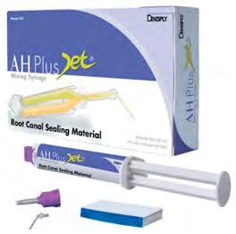
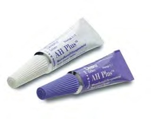
Фото 3. Силер на основі епоксидних смол AH Plus в тубах і система для змішування AH Plus Jet (DeTrey).
Препарати з додаванням медикаментозних засобів. У препарати цієї групи для дезінфікуючої дії додано параформальдегід, а як протизапальний елемент — глюкокортикоїди. При потраплянні цих речовин у періапікальні тканини виникають великі запальні реакції, що не відповідає вимозі біологічної сумісності [39, 40]. Крім того, параформальдегід викликає алергійні реакції, а також виражені нейротоксичні ефекти [41].
Силери на основі біокераміки. Ендодонтична біокераміка нечутлива до вологи і крові [42, 43], ці матеріали просторово стабільні і незначно розширюються при отвердінні, забезпечуючи найкращі запечатуючі властивості [44, 45]. Після отвердіння матеріал стає щільним і нерозчинним, pH при отвердінні вище 12.
Методи пломбування кореневих каналів
До основних методів пломбування кореневих каналів гутаперчею належать:
- метод центрального штифта;
- холодна (латеральна) конденсація гутаперчі;
- компакція гутаперчі, розігрітої в каналі;
- ін'єкція розігрітої гутаперчі з подальшою компакцією в каналі;
- конденсація механічно розм'якшеної гутаперчі;
- система обтурації розігрітою гутаперчею на носії.
Існують різні методи внесення і компакції гутаперчі в кореневих каналах з використанням твердого або м'якого штифта. При використанні твердої гутаперчі штифт вносять у підготовлений кореневий канал і адаптують до стінок каналу за допомогою силера. Також можливе використання додаткових (аксесорних) штифтів. Розм'якшена гутаперча пластифікується до або після введення в кореневий канал шляхом нагрівання або за допомогою розчинника, де також використовується силер.
З цією метою були розроблені стандартизовані штифти, що відповідають розміру і конусності ендоінструментів. Існують штифти з малою — 2% конусністю відповідно до стандарту ISO для ендодонтичних інструментів, а також штифти з підвищеною конусністю — 4%, 6% і більше. Крім цього, доступні нестандартизовані штифти — тонкі (fine), середні (medium) і великі (large).
Пломбування кореневих каналів твердою гутаперчею
Методика передбачає використання одного майстер-штифта або використання техніки латеральної компакції гутаперчевих штифтів. При цьому важливою є максимальна адаптація штифта в апікальній третині кореневого каналу (3-4 мм). Цей штифт називають майстер-штифтом.
Техніка одного штифта. Цей метод пломбування кореневих каналів передбачає ідеальну відповідність штифта підготованому каналу. При пломбуванні штифт з нанесеним силером вводиться в кореневий канал до отримання щільного контакту в апікальній зоні (фото 4). Методика досить проста, але має ряд недоліків, зокрема, після обробки кореневі канали не мають округлої форми в поперечному перерізі, за винятком апікальної зони (2-3 мм). Метод дозволяє отримати коректну адаптацію лише в апікальній частині каналу [46, 47].
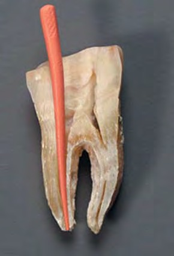
Фото 4. Моноштифтова техніка.
Латеральна компакція. Методика передбачає застосування, крім майстер-штифта, додаткових (аксесорних) штифтів для зменшення товщини силера. Майстер-штифт адаптують за допомогою спеціальних довгих гострих конусних інструментів (спредер) до однієї зі стінок каналу латерально, після чого вводять додаткові штифти з нанесеним силером, які також адаптують спредером. Таким чином канал послідовно заповнюється, доки в нього неможливо буде ввести додатковий штифт глибше, ніж на 2-3 мм (фото 5). Надлишки гутаперчі в усті обрізують розігрітим інструментом з наступним вертикальним ущільненням спеціальним плагером.
Переваги латеральної компакції — зменшення кількості силера в каналі і хороший рівень герметичності [48]. Недоліком цієї методики є те, що коренева пломба складається не з гомогенної маси, а з окремих штифтів, щільно адаптованих один до одного. Однак ця методика має хороший клінічний успіх [49].
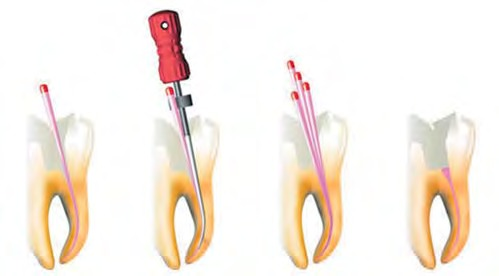
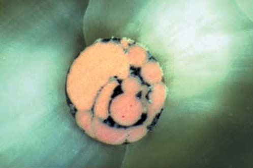
Фото 5. а) Техніка латеральної компакції гутаперчі (http://micro-mega.com); б) Поперечний переріз каналу після пломбування методом холодної латеральної компакції гутаперчі. Силер (чорні зони) з'єднує майстер-штифт і додаткові штифти (G. Bergenholtz, Textbook of Endodontology, 2013).
Пломбування каналів розм'якшеною гутаперчею
З метою пластифікації гутаперчі застосовуються нагрівання і розчинники. Це дає можливість провести ущільнення гутаперчі з можливим заповненням більшого обсягу кореневого каналу. З цією метою найчастіше використовується нагрівання безпосередньо всередині кореневого каналу, а також перед пломбуванням кореневого каналу.
Гаряча латеральна компакція. Техніка подібна до холодної латеральної компакції гутаперчі. Розігрітий спредер вводять в кореневий канал, заповнений гутаперчевими штифтами. Після цього адаптацію гутаперчі проводять холодним спредером. Вільний простір, що утворився, заповнюють додатковими штифтами. Процедуру повторюють до повного заповнення кореневого каналу (рис. 2). За цієї методики утворюється більш гомогенна маса, знижується ризик мікроподтікання [50].
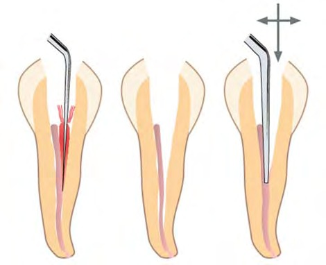
Мал. 2. Гаряча латеральна компакція гутаперчі (G. Bergenholtz, Textbook of Endodontology, 2013).
Обтуратори на носії
Найяскравішими представниками цієї методики є системи Thermafil, Gutta Core. Техніка передбачає заповнення кореневого каналу спеціальним обтуратором — пластиковим або гутаперчевим носієм з нанесеною гутаперчею, який попередньо нагрівається у спеціальній печі (фото 6). Силер при цьому попередньо вносять в устьову частину кореневого каналу або за допомогою трьох паперових штифтів. Після нагрівання в печі обтуратор пасивно вводиться в канал протягом 6-8 с з подальшим ущільненням гутаперчі в устьовій частині холодним конденсором (рис. 3). Це найбільш швидка і проста техніка пломбування з використанням термопластифікованої гутаперчі. Носій компенсує усадку гутаперчі і розподіляє її по всьому простору кореневого каналу [52].
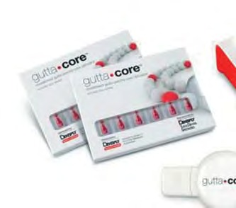
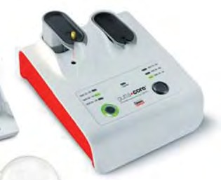
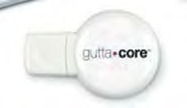
Фото 6. Обтуратор на носії Gutta Core (Maillefer).
При використанні обтураторів Thermafil (Maillefer) можна застосувати просту методику калібрування і підбору необхідного розміру обтуратора. З цією метою використовується комплект пластикових носіїв без нанесеної гутаперчі. Підібраний носій пасивно вводиться в кореневий канал до заклинювання. Правильно підібраний носій повинен щільно фіксуватися в каналі на глибині 1 мм менше робочої довжини (фото 7). Ця нескладна техніка запобігає ризику виведення обтуратора за межі кореневого каналу.
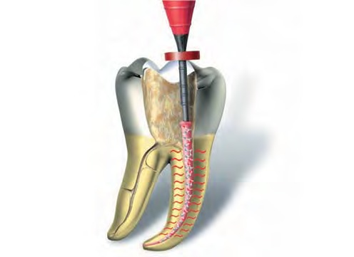
Мал. 3. Розташування обтуратора в кореневому каналі.
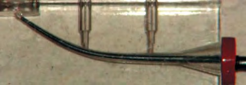
Фото 7. Адаптація пластикового носія в кореневому каналі (G. Cantatore).
Як недолік можна відзначити зміщення носія до стінки у викривлених каналах (фото 8) [52, 53]. Деяка складність переліковування каналів, запломбованих у цій техніці, полягає в утрудненій евакуації пластикового носія. Цей недолік усунуто шляхом заміни полімерного носія на вулканізовану гутаперчу (Gutta Core). Обтуратори Gutta Core (Maillefer) не потребують використання спеціальних борів (Gutta Cut) для обрізування пластикового носія. Ручку обтуратора досить зламати розгойдуючими рухами, зафіксувавши Gutta Core гострим інструментом в устьовій частині (фото 9, 10).
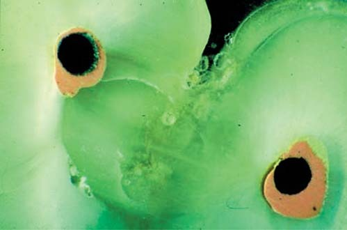
Фото 8. Зміщення носія до стінки у викривлених каналах (G. Bergenholtz, 2013).
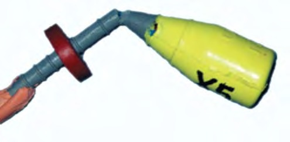
Фото 9. Відламування ручки обтуратора після розігріву для полегшення введення в кореневий канал.
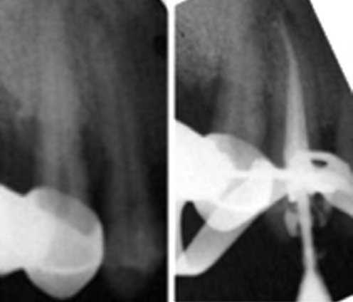
Фото 10. Пломбування кореневих каналів системою Gutta Core.
Гаряча вертикальна компакція
Методика передбачає заповнення кореневого каналу розм'якшеною гутаперчею з її вертикальним ущільненням. Таким чином підвищується шанс повноцінного заповнення всіх просвітів кореневого каналу з латеральними відгалуженнями і додатковими каналами. Кореневий канал змащують невеликою кількістю силера і вводять майстер-штифт, який повинен щільно адаптуватися в апікальній третині. Штифт пластифікується гарячим плагером з подальшим ущільненням холодним конденсором. Найбільш популярними пристроями є Calamus Dual (Maillefer), System B, B & L System і т.д. (фото 11).
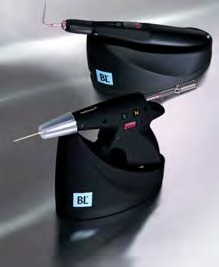
Фото 11. Апарати для вертикальної гарячої компакції гутаперчі: а) Calamus Dual (Maillefer); б) B & L system; в) System B & Obtura III.
Одним з різновидів цієї техніки є методика безперервної хвилі [51]. У цьому випадку плагер апарата використовується в гарячому і холодному режимах. Залежно від температури плавлення гутаперчі можна вибрати різні рівні температури (150-230°С). Це дозволяє забезпечити безперервне просування плагера на велику глибину. Для заповнення решти каналу використовуються спеціальні екструдери пістолетного або інжекторного типу (Calamus Dual, Obtura, B & L Beta). У цій техніці підвищується шанс заповнити латеральні відгалуження, додаткові канали, починаючи з коронарної третини кореневого каналу і закінчуючи апікальною, оскільки розігрівання гутаперчі і її компакція проводяться поетапно.
Невід'ємна частина будь-якої методики пломбування кореневих каналів — точне калібрування майстер-штифта. З огляду на те, що навіть стандартизовані штифти часто не відповідають стандарту ISO за розміром кінчика, слід використовувати спеціальний калібратор гутаперчі (фото 12). Щоб уникнути заломів, обрізування кінчика гутаперчі необхідно робити тільки гострим лезом.
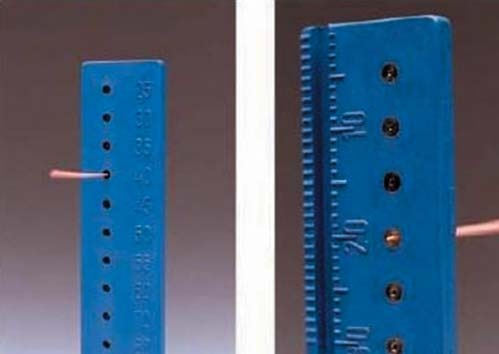
Фото 12. Калібрування гутаперчевих штифтів (G. Schmalz, 2013).
Попередній підбір холодних конденсорів передбачає вибір такого інструмента, кінчик якого вільно проникає на глибину до 4 мм менше робочої довжини. Важливо зазначити, що для створення гідравлічних сил конденсор не повинен торкатися стінок кореневого каналу, але повинен мати мінімальний зазор. Усі наступні конденсори вибираються за збільшенням їх розміру. У викривлених каналах рекомендується застосовувати не сталеві, а гнучкі Ni-Ti конденсори.
Вибір голки для екструдера передбачає можливість її вільного введення на глибину до 4 мм. Таких самих правил дотримуються і для гарячого плагера. На кожен з обраних інструментів фіксується силіконовий стопер для контролю за глибиною введення. Температурні режими для гарячого плагера і екструдера встановлюються в залежності від температури плавлення застосовуваної гутаперчі. З метою полегшення введення гарячого плагера в кореневий канал проводиться його адаптація. Для цього активований плагер вводиться в кореневий канал. Такий розігрів підвищує його пластичність. Потрібно врахувати, що час присутності активного гарячого плагера в кореневому каналі не повинен перевищувати 4 с, інакше буде перегрів періодонтальної зв'язки і навколозубних тканин.
Після внесення силера за однією з наведених вище методик у канал вводиться майстер-штифт. Кінчик майстер-штифта попередньо вкорочується на 1 мм. Ця процедура запобігає ризику виведення гутаперчі за межі кореневого каналу при її вертикальній компакції. Після цього надлишок гутаперчевого штифта обрізується в усті гарячим плагером з подальшою компакцією конденсором великого розміру. Необхідно зберігати незначний апікальний тиск холодним конденсором для створення гідравлічного тиску.
Активований розігрітий плагер вводиться на підготовану довжину (до стопера). Якщо оператор не встиг ввести гарячий плагер на задану глибину за 4 с, необхідно інактивувати прилад та зачекати 2-3 с, потім повторно провести активацію і введення плагера до стопера. На заданій глибині плагер вимикається і робиться 10-секундна пауза. Після цього плагер знову активується на 1 с, потім кількома поворотами за годинниковою стрілкою і проти неї надлишок гутаперчі обрізується і виводиться з каналу. Залишки холодної гутаперчі залишаються на плагері. Розігріта гутаперча в апікальній третині ущільнюється підготованим ручним конденсором зі стопером з подальшим апікальним тиском протягом 5 с. На цьому етапі необхідно виконати контрольний рентгенографічний знімок (фото 13).
За необхідності фіксації штифтової конструкції або при підготовці кореневого каналу під вкладку на цьому етапі пломбування кореневого каналу можна вважати завершеним. Для заповнення просвіту каналу, що залишився, використовується екструдер. Перед його застосуванням у канал вноситься незначна кількість силера для склеювання порцій гутаперчі. Голка екструдера (пістолетного або інжекторного типу) вводиться до контакту з гутаперчею. Очікування протягом 2-3 с призводить до незначного плавлення гутаперчі, що міститься в каналі. Далі шляхом активації екструдера здійснюється порційне заповнення всього кореневого каналу розігрітою гутаперчею (по 3-4 мм). Показником наявності необхідного обсягу гутаперчі в кореневому каналі є відчуття виштовхування голки. Кожен наступний шар гутаперчі ущільнюється конденсорами зростаючих розмірів з наступним апікальним тиском по 5 с.
Важливим завершальним етапом пломбування кореневих каналів є підготовка порожнини зуба до подальшого відновлення коронкової частини. Необхідно видалити надлишок гутаперчі на 0,5-1 мм нижче усть кореневих каналів. Також слід очистити порожнину зуба від залишків силера, оскільки будь-який силер значно погіршує якість адгезивної підготовки. Для цього застосовуються спеціальні розчини або ізопропіловий спирт (фото 14).
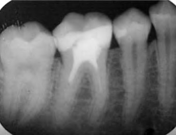
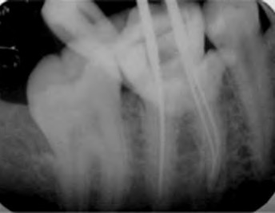
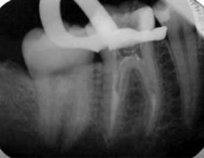
Фото 13. Пломбування кореневих каналів у техніці гарячої вертикальної компакції гутаперчі системою Calamus Dual (Maillefer).
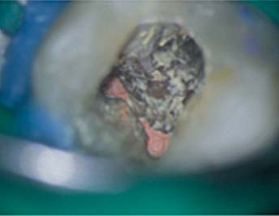
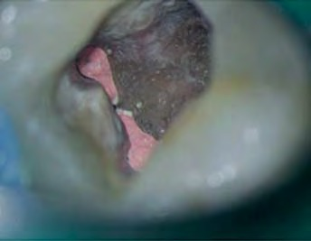
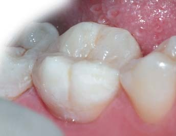
Фото 14. Очищення порожнини зуба після пломбування кореневих каналів з подальшим відновленням коронкової частини зуба.
Слід зазначити, що одним з показань для застосування цієї методики пломбування кореневих каналів є наявність внутріканальних резорбцій. Як недолік даної методики можна відзначити ризик пошкодження періодонтальної зв'язки внаслідок перегріву. Зміна температури на поверхні кореня може досягати 15-30°С [51] з можливим розвитком резорбції та анкілозу [34]. На сьогодні немає достовірних даних про перевагу гарячої вертикальної конденсації над методом холодної латеральної компакції з точки зору клінічного успіху ендодонтичного лікування.
Інжекторна (сквірт) методика
За цієї методики термопластифіковану гутаперчу вводять безпосередньо в кореневий канал за допомогою екструдера. Нагріта до 180-230°С гутаперча подається через голку 23-25 калібру в підготований канал. Слід зазначити, що в момент виходу з голки гутаперча вже має температуру менше 70°С.
Найважливішим етапом є правильний підбір холодних конденсорів. Перший повинен вільно проходити в кореневий канал до 4 мм від верхівки, не торкаючись стінок. Силер вносять технікою трьох паперових штифтів, при якій першим штифтом змащують стінки кореневого каналу на всій його довжині. Двома іншими видаляють надлишки, залишаючи тонкий шар силера. У момент екструзії голку вводять на глибину приблизно до 4 мм менше робочої довжини і вводять розм'якшену гутаперчу. Критерієм необхідної порції є відчуття виштовхування голки з каналу. Інжектор видаляють з каналу і ущільнюють матеріал підібраним конденсором зі збереженням незначного тиску протягом 5 с.
Наступна порція вводиться подібно до першої з однією умовою — розігріту голку інжектора слід занурити в попередній шар ущільненої гутаперчі для гомогенізації кореневої пломби. При відсутності апікального упору існує ризик екструзії гутаперчі за межі кореневого каналу. Крім того, одномоментна ін'єкція великої порції гутаперчі може призвести до утворення порожнин під час її усадки і компакції. Для запобігання цій проблемі гутаперча вводиться невеликими порціями з ущільненням кожного шару (фото 15).
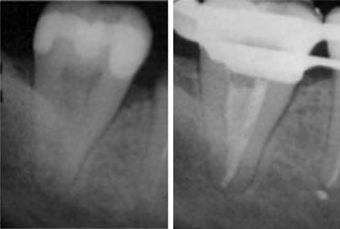
Фото 15. Пломбування кореневих каналів інжекторною (сквірт) технікою.
Висновки
Для досягнення успіху в ендодонтичному лікуванні необхідно локалізувати, сформувати, очистити і запечатати кореневі канали не лише в апікальній зоні, але і в корональній третині кореневого каналу. Підставою для вибору матеріалу і техніки для пломбування кореневих каналів є мануальні навички, досвід, клінічна ситуація і морфологія кореневої системи.
Література
- Sabeti M., Nekofar M., Mottahary P., Ghandi M., Simon J. Healing of apical periodontitis after endodontic treatment with and without obturation in dogs. J Endod 2006: 32: 628-633.
- Gutmann JL. Clinical, radiographic, and histologic perspectives on success and failure in endodontics. Dent Clin North Am 1992: 36: 379-381.
- Sundqvist G., Figdor D. Endodontic treatment of apical periodontitis. In: Ørstavik D, Pitt Ford TR, eds. Essential Endodontology. Prevention and Treatment of Apical Periodontitis. Oxford. Blackwell, 1998: 242-277.
- Jasper EA. Root canal therapy in modern dentistry. Dental Cosmos 1933: 75: 823-829.
- Seltzer S, Green DB, Weiner N, De Renzis F. A scanning electron microscope examination of silver cones removed from endodontically treated teeth. Oral Surg Oral Med Oral Pathol 1972: 33: 589-605.
- E.D Gurgel-Filho, J.P Andrade Feitosa et al, Chemical and Xray analyse of five brands of dental Gutta percha cone. Int. Endod J 2003 (36) 302.
- Hillar M. Rootarae and John M. Powers: Determination of phase transitions in Gutta-percha by different Thermal Analysis. J Dent Res 1997 (56) 1453.
- E. C. Combe, B.D. Cohen and K. Cummings: Alpha and beta-forms of Gutta-percha in products for root canal filling. Int. Endod. J 2001 (34) 447.
- Gutta Percha: Development And Current Perspectives In Dentistry. http://www.guident.net/endodontics/gutta-percha-development-and-current-perspectives-in-dentistry.html
- Franklin S. Weine: Text book of Endodontic Therapy: Canal Filling with Semi solid materials. 1996, The Mosby Company, 5th Edition., p 426-429.
- Dr. R. Prakash, Dr.V.Gopikrishna, Dr. D. Kandaswamy; Gutta percha – An Untold story; Endodontology 2005 (17) 32.
- Angie G. Ghoneim, Reem A. Lutfy, Nihal E. Sabet, and Dalia M. Fayyad, Resistance to fracture of Roots Obturated with Novel canal Filling System. J Endod 2011(37) 1590.
- Carvalho-Junior JR, Correr-Sobrinho L, Correr AB, Sinhoreti MA, Consani S, Sousa-Neto MD. Solubility and dimensional change after setting of root canal sealers: a proposal for smaller dimensions of test samples. J Endod. 2007 Sep;33(9):1110-6.
- Flores DS, Rached FJ Jr, Versiani MA, Guedes DF, Sousa-Neto MD, Pecora JD. Evaluation of physicochemical properties of four root canal sealers. Int Endod J. 2011 Feb;44(2):126-35.
- Ørstavik D, Nordahl I, Tibballs JE. Dimensional change following setting of root canal sealer materials. Dent Mater. 2001 Nov;17(6):512-9.
- Schilder H. Endodontic therapy. In: Goldman H, ed. Current Therapy in Dentistry. St. Louis: The CV Mosby Co., 1964.
- Yee F, Marlin J, Krakow A, Gron P. Three dimensional obturation of the root canal using injected molded thermoplasticized dental gutta percha. J Endod 1977: 3: 168-174.
- Tsukada G, Tanaka T, Torii M, Inoue K. Shear modulus and thermal properties of gutta percha for root canal filling. J Oral Rehab 2004: 31: 1139-1144.
- Lee CQ, Chang Y, Robinson S, Hellmuth E. Dimensional stability of thermosensitive gutta percha. J Endod 1997: 23: 579-582.
- Brodin P, Roed A, Aars H, Ørstavik D. Neurotoxic effect of root filling materials. J. Dent. Res. 1982; 61: 1020-3.
- Ørstavik D, Mjör IA. Histopathology and x-ray microanalysis of the subcutaneous tissue response to endodontic sealers. J. Endod. 1988; 14: 13-23.
- Sjögren U, Sundqvist G, Nair PR. Tissue reaction to gutta-percha particles of various sizes when implanted subcutaneously in guinea pigs. Eur. J. Oral. Sci. 1995; 103: 313-21.
- Friedman S. Treatment outcome and prognosis of endodontic therapy. In: Essential Endodontology (Ørstavik D, Pitt Ford TR, eds). Oxford: Blackwell Munksgaard, 2008; 408-69.
- Ricucci D, Langeland K. Apical limit of root canal instrumentation and obturation. Part II. Int. Endodont. J. 1998; 31: 394-409.
- Weiss EI, Shallav M, Fuss Z. Assessment of antibacterial activity of endodontic sealers by a direct contact test. Endod. Dent. Traumatol. 1996; 12: 179-84.
- Hensten-Pettersen A, Ørstavik D, Wennberg A. Allergenic potential of root canal sealers. Endod. Dent. Traumatol. 1985; 1: 61-5.
- Grade AC. Eugenol in Wurzelkanalzementen als mögliche Ursache für eine Urtikaria. Endodontie 1995; 2: 121-5.
- Kersten HW. Evaluation of three thermoplasticized gutta-percha filling techniques using a leakage model in vitro. Int. Endod. J. 1988; 21: 353-60.
- Longwill DG, Marshall FJ, Creamer RH. Reactivity of human lymphocytes to pulp antigens. J. Endod. 1982; 8: 27-32.
- Ørstavik D, Brodin P, Aas E. Paraesthesia following endodontic treatment: survey of the literature and report of a case. Int. Endod. J. 1983; 16: 167-72.
- Teeuwen R. Schädigung des Nervus alveolaris inferior durch überfülltes Wurzelkanalfüll-material. Endodontie 1999; 8: 323-36.
- Ørstavik D. Weight loss of endodontic sealers, cements and pastes in water. Scand. J. Dent. Res. 1983; 91: 316-19.
- Ricucci D, Langeland K. Apical limit of root canal instrumentation and obturation. Part II. Int. Endodont. J. 1998; 31: 394-409.
- Von Fraunhofer JA, Branstetter J. The physical properties of four endodontic sealers and cements. J. Endod. 1982; 8: 126-30.
- Wilson AD, Clinton DJ, Miller RP. Zinc oxide-eugenol cements. IV. Microstructure and hydrolysis. J. Dent. Res. 1973; 52: 253-60.
- Ørstavik D, Kerekes K, Eriksen HM. Clinical performance of three endodontic sealers. Endod. Dent. Traumatol. 1987; 3: 178-86.
- Hørsted P, Söholm B. Overfölsomhed overfor rodfyllnings materialet AH26. Tandlaegebladet 1976; 80: 194-8.
- Ørstavik D, Hongslo JK. Mutagenicity of endodontic sealers. Biomaterials 1985; 6: 129-32.
- Negm MM. Biologic evaluation of SPAD II. A clinical comparison of Traitement SPAD with the conventional root canal filling technique. Oral. Surg. 1987; 63: 487-93.
- Pitt Ford TR. Tissue reactions to two root canal sealers containing formaldehyde. Oral. Surg. 1985; 60: 661-4.
- Fehr B, Huwyler T, Wütrich B. Formaldehyd- und Paraformaldehyd-allergie. Schweiz. Monatsschr. Zahnmed. 1992; 102: 94-6.
- Hench L. Bioceramics: from concept to clinic. J Amer Ceram Soc 1991: 74: 1487-1510.
- Jefferies S. Bioactive and biomimetic restorative materials: a comprehensive review. Part I. J Esthet Restor Dent 2014: 26: 14-26.
- Koch K, Brave D. Bioceramic technology – the game changer in endodontics. Endod Prac USA 2009: 12: 7-11.
- Loushine BA, Bryan TE, Looney SW, Gillen BM, Loushine RJ, Weller RN, Pashley DH, Tay FR. Setting properties and cytotoxicity evaluation of a premixed bioceramic root canal sealer. J Endod 2011: 37: 673-677.
Повний список літератури в редакції.